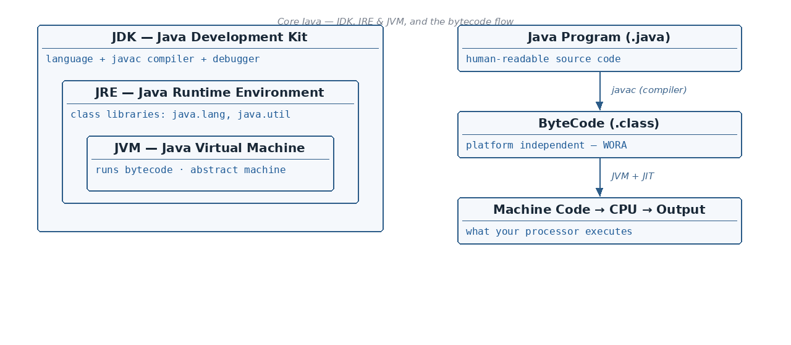

The journey of a Java program (bytecode flow)
☕ 6 min read · 🎬 Video walkthrough · 📊 UML diagram · 💻 Runnable code
⚡ In a nutshell — Why Java is a platform independent language (WORA — Write Once, Run Anywhere) · What the JVM, JRE and JDK are, and how they fit inside each other · How your Java code travels from a .java file to real output (bytecode flow) · The three Java editions: JSE, JEE and JME
First, four quick facts about Java:

Everyday analogy: think of bytecode as a message written in a universal language, and the JVM as a local translator. You write your letter once (WORA). Every country (operating system) has its own translator (JVM) who converts the universal letter into the local language (machine code). You never rewrite the letter — you just need the right translator on each machine.
To understand how this magic works, we need 3 important concepts:
The notes show three nested circles: JDK is the biggest circle, JRE sits inside it, and JVM sits innermost.
+-----------------------------------------------+
| JDK |
| (compiler javac, debugger, language...) |
| +---------------------------------------+ |
| | JRE | |
| | (class libraries: java.lang, ...) | |
| | +------------------------+ | |
| | | JVM | | |
| | | (runs the bytecode) | | |
| | +------------------------+ | |
| +---------------------------------------+ |
+-----------------------------------------------+
In plain words: JVM is inside JRE, and JRE is inside JDK. Every JDK contains a JRE, and every JRE contains a JVM.
Java Program --> Compiler --> ByteCode --> JVM --> Machine Code --> CPU --> Output
|__________________________________________|
Platform Independent part
Step by step, in plain words:
.java file.javac) — translates your code into bytecode.Two very important points:
If your file is student.java, this is what happens when you compile and run it:
student.java --(run: javac student.java)--> ByteCode (student.class)
// student.java
public class student {
public static void main(String[] args) {
System.out.println("Hello from bytecode!");
}
}
Commands and result:
$ javac student.java // compiler creates the bytecode file: student.class
$ java student // JVM runs the bytecode
Hello from bytecode!
Remember:
javacturns.javainto.class(bytecode). The JVM turns bytecode into machine code. Bytecode = platform independent; JVM = platform dependent.
java.lang, java.util, etc.). These libraries give you String, System.out.println, ArrayList and thousands of other tools for free.Analogy: the JRE is like a music player. It can play songs (run bytecode), but it cannot record new songs (write and compile code).
.java files)javac)The simple formula from the notes:
JDK = JRE + (Programming Language + Compiler + Debugger)
Remember: Developers install the JDK. Users who only run Java programs need just the JRE.
Java comes in three editions, each for a different kind of work:
Note: One Java file must have only one public class.
Also, a class can contain these members:
// File name: A.java
public class A {
public static void main(String[] args) {
System.out.println("Hello");
}
}
Output:
Hello
Two rules work together here:
public class A must live in A.java).Remember the flow: Java Program --Compile--> ByteCode --> the JVM calls the main() method.
Reason 1: The JVM calls the main method using the class name. So that class must be accessible from anywhere — which means it should be public. If the JVM could not reach the class, it could not start your program at all.
Reason 2: Suppose one file could hold two public classes:
// File name: Employee.java — NOT allowed, will NOT compile!
public class A {
}
public class B {
}
Now the JVM has a puzzle: the file is called Employee.java, but which public class should it match with the file — A or B? Where should it look for main()? By forcing one public class per file, named the same as the file, the JVM does not have to worry about other public classes — it can find the right class instantly just from the file name.
Analogy: a file is like a house and the public class is its name plate at the front door. One house, one name plate, and the plate must match the address (file name). If a house had two different name plates, the postman (JVM) would never know whom to deliver to.
Remember: The main method lives inside the public class, and the public class name must equal the file name. That is how the JVM finds and starts your program.
java.lang, java.util, ...); can run bytecode but cannot compile code.javac) + debugger — the full developer toolbox.main — so the JVM can find and call main() without confusion.👏 Found this useful? Give it a few claps so more developers discover it, and follow for the whole series — every article ships with a UML diagram, runnable code, a narrated video, and a companion PDF. Happy building! 🚀